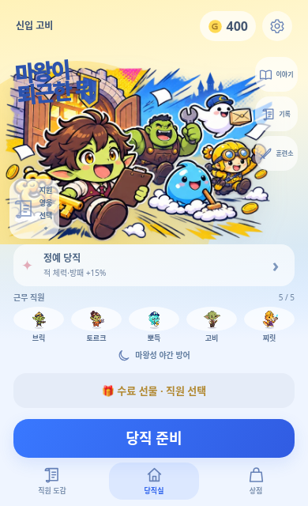
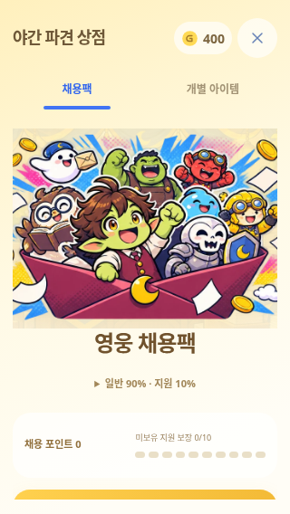
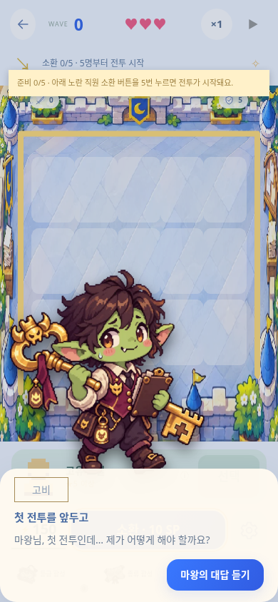
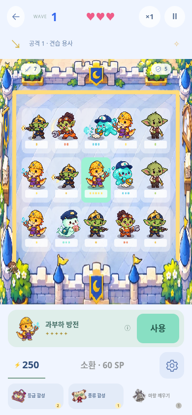

우선 수정 디자인 근거01 · 짧은 화면 로비제목·성문·지원 선택이 겹침
02 · 가격 가독성숫자와 배경 대비 약 1.02:1 03 · 핵심 정보 배치상점 CTA·훈련 효과가 첫 화면 아래로 밀림
03 · 핵심 정보 배치상점 CTA·훈련 효과가 첫 화면 아래로 밀림
04 · 글자 위계역할·상태·내비게이션이 8~11px 수준 05 · 시각 안내 불일치“노란 소환 버튼”과 파란 실제 버튼
05 · 시각 안내 불일치“노란 소환 버튼”과 파란 실제 버튼
06 · 전투 시인성장식과 전투 정보의 비중 재조정